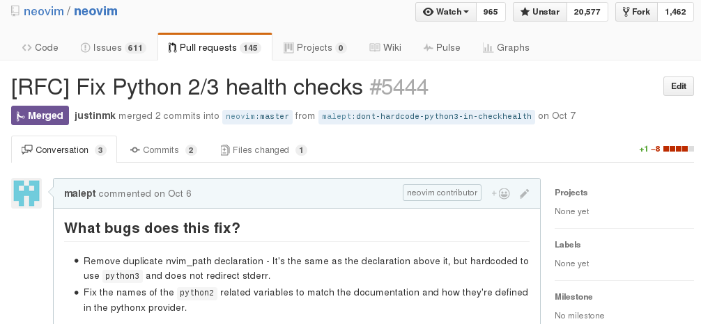

Neovim: Vim for the 21st century

Presenter: Mark Lee, Vimmer for over 10 years
November 14, 2016
I've been asked to talk about why you should switch to Neovim. I'm not going to do that, per se. Editor wars are way too contentious, and I'm saying this as someone who has seen Saint IGNU-cius in person. This talk is more along the lines of "I think Neovim is cool and this is why".
In the beginning…
There were line editors, starting with qed (1965). And then:
- ed (1969, Thompson/Ritchie)
- em (1976, Coulouris)
- en (1976, Haley/Joy)
- ex (1976, Joy)
vi was a program designed to be a different, "visual" mode to ex.
As always, I like to give historical context to my talks. It was pretty interesting to read about the lineage of Neovim, all the way back to 1965 with the qed line editor, back in the pre-UNIX days. qed gave way to ed (which you can use on our production servers for whatever reason) and eventually ex and vi.
And then there was Vim
- 1988 - a port of Stevie (Vi clone for Atari ST) to Amiga
- 1991-11-02 - First release (1.14)
- 1998-02-19 - Version 5.0 (syntax highlighting, VimL, GUIs)
- 2001-09-27 - Version 6.0 (diff, folding, UTF-8, i18n, plugins, colorschemes)
- 2006-05-08 - Version 7.0 (tabs, spellcheck, omnicomplete)
Vi spawned a whole series of clones, and Vim as we know it today was based off of one of them. This rough, truncated timeline gives you an idea of when some of the now-popular features were added. I'm pretty sure that I started using Vim in the early 2000s by downloading GVim for Windows.
Vim's Freezing Problems
- Plugins with CPU/IO-intensive code lock up the editor. Examples:
- syntastic (syntax checker)
- powerline (statusline enhancement)
- vim-gitgutter
- Workarounds:
- vim-dispatch (spawns new console or tmux pane)
- vimproc.vim (calls native code to fork a new process)
Despite all of the improvements Vim made to the original Vi featureset, it was not without its limitations. The elephant in the room was its freezing problems. It was more-or-less fine with opening large files, but if a plugin happened to operate on one, that was another matter entirely. This was because Vim commands were all synchronous. The plugins listed were among the ones affected by this problem. Another example is if you use vim-bundler and run :Bundle, because it uses the built-in :make command, you won't be able to edit any of your documents until Bundler finishes.
Neovim Begins: With Multithreading?
- 2013-12-04: Experimental branch to introduce threading, by Thiago Arruda (BR)
- 2014-02-21: Bountysource fundraiser launched
- 2014-03-23: Raises $33,966 out of $10,000
- 2015-11-01: Neovim 0.1 released
At the end of 2013, one developer, Thiago Arruda, tried to fix this by adding multithreading to Vim. This resulted in zero feedback from Bram, Vim's creator. Frustrated by the development process, Thiago started a crowdsourced fundraiser so that he could work on a fork of Vim. It ended up raising more than three times the amount asked, and the first stable version was released about a year and a half later.
Initial Goals
- Use GitHub, add more people with the "commit bit"
- Modern build system (cmake)
- Remove legacy OS support (e.g., MSDOS)
- Rewrite plugin architecture with async support
- Make it easier to integrate with GUIs
- Better tests
The initial goals ultimately point towards two ideas: increasing bus factor and development speed. I should point out that all of these high-level goals were achieved, although in some cases, the initial attempt at implementation did not go so well (as can be the case in software engineering).
Contributors Welcome
If that low barrier to entry weren't there, I probably wouldn't have contributed. Sending a patch to a mailing list is a lot more work than filing a pull request.
Bonus Features
- Built-in terminal emulator
- Most of vim-sensible is set by default
- Better clipboard support out-of-the-box
- True color (24-bit) colorscheme support
- Helpful hints on how to get the most out of your Vim config (:CheckHealth)
In addition to my small bug fix, a host of features and ergonomic fixes have been made possible by this modern development process. For instance, the truecolor colorscheme support feature was a third-party patch since at least 2013. A version of that landed in Neovim in 2015. Another example is Tim Pope's vim-sensible project, which contains "sensible defaults" for Vim. Most of these settings are now part of the default Neovim config, and the rest have documentation as to why they were not added. My favorite of these might be the built-in terminal.
One more thing: incremental command live feedback
This last feature landed last week and so I haven't had a chance to try it out, but it looks pretty nifty. It reminds me of that Sublime Text multiple cursors feature.
Neovim Frontends
- Good ol' terminal (Homebrew: brew install neovim/neovim/neovim)
- Atom integration
- VimR (macOS)
- Multiple Electron apps
- SolidOak (Rust IDE‽)
- …and a lot more
Aside from the terminal UI, there are several third party frontends. I've only listed a few. By "Electron" I mean the Chromium-based app framework that lets you write desktop apps using web technologies. That's right, at least one person wrote a web component for Neovim.
Vim's status
- Vim 8.0, released 2016-09-12 (~10 years after 7.0) with some familiar features:
- Async support
- Dropped support for certain legacy OSes
- Truecolor colorscheme support
- Better tests
The relative success of the Neovim project must have sparked something in Bram, because Vim started getting some of the more popular features of Neovim, and version 8 was released with these changes a couple of months ago. Still doesn't have a terminal, though.
Questions?